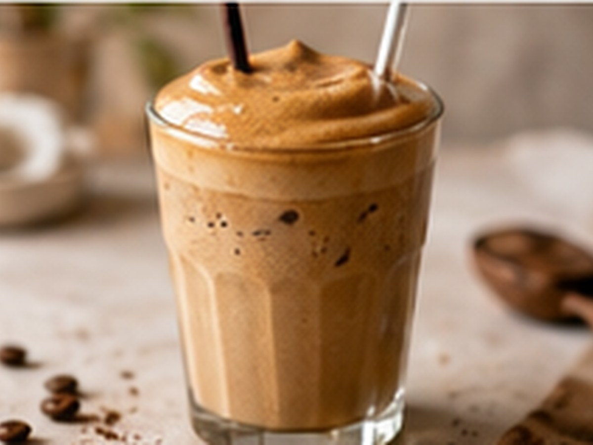

✨ KI-generiertes Bild Kaffee aus aller WeltKaffee aus aller Welt
Greek Frappé
Griechisch, schaumig, kalt.
⏱4 Min.
📶Einfach
☕1 Portion
🫘Zutaten
- Instantkaffee2 TL
- Wasser, kalt50 ml
- Eiswürfelnach Bedarf
📋Zubereitung
- 1Instantkaffee mit wenig kaltem Wasser kräftig aufschäumen (Schneebesen oder Shaker).
- 2In ein Glas mit Eiswürfeln geben.
- 3Bei Bedarf mit Wasser auffüllen.
💡
Kaffee für dieses Rezept entdeckenLeNoKo Shop
→
Kaffee-Tipp
Der kräftige Peru Signature funktioniert auch stark aufgeschäumt gut.